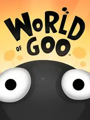

 |
|
| Tiempo de juego | 24s |
| Última actividad | 11/12/2025 22:54:23 |
| Añadido | 20/11/2025 16:36:15 |
| Modificado | 20/11/2025 16:37:29 |
| Estado de finalización | Jugado |
| Librería | Playnite |
| Fuente | |
| Plataforma | PC (Windows) |
| Fecha de lanzamiento | 13/10/2008 |
| Puntuación de la Comunidad | 80 |
| Puntuación de la Crítica | 87 |
| Puntuación de usuario | |
| Género | Indie Puzzle Simulator Strategy |
| Desarrollador | 2D Boy |
| Editor | 2D Boy Brighter Minds Microsoft Game Studios Tomorrow Corporation |
| Característica | Co-Operative Single Player |
| Enlaces | Official Website Steam GOG |
| Tag | |
World of Goo no es solo un juego de puzles. Es una pequeña obra maestra que ayudó a definir el género "Indie". Creado por solo dos personas (2D Boy), este juego combina física realista, un arte surrealista y una banda sonora inolvidable.
El mundo es hermoso, extraño y está lleno de... moco.
Con niveles que van desde lo relajante hasta lo desesperante, World of Goo es un clásico atemporal que pone a prueba tu cerebro y tu pulso.